Microsoft Entra hybrid join targeted deployment
To join devices to Entra ID, for on-premises AD DS joined devices, we have 2 options:
- Re-run Entra Connect to create SCP for all domain joined computers.
- Write the tenant information to some computer to do Hybrid join
Hybrid Join devivces will get SSO, can be membership of device groups, use for device-based authentication, and etc.
Since CSoG focuses everyone can do the steps by yourself without impact to production environment wider.
We are following step 2 from Microsoft Entra hybrid join targeted deployment
1. Create a pilot device group

2. Configure GPO settigs to enable Entra Hybrid join targeted deployment
1. Copy Tenant ID and Tenant name

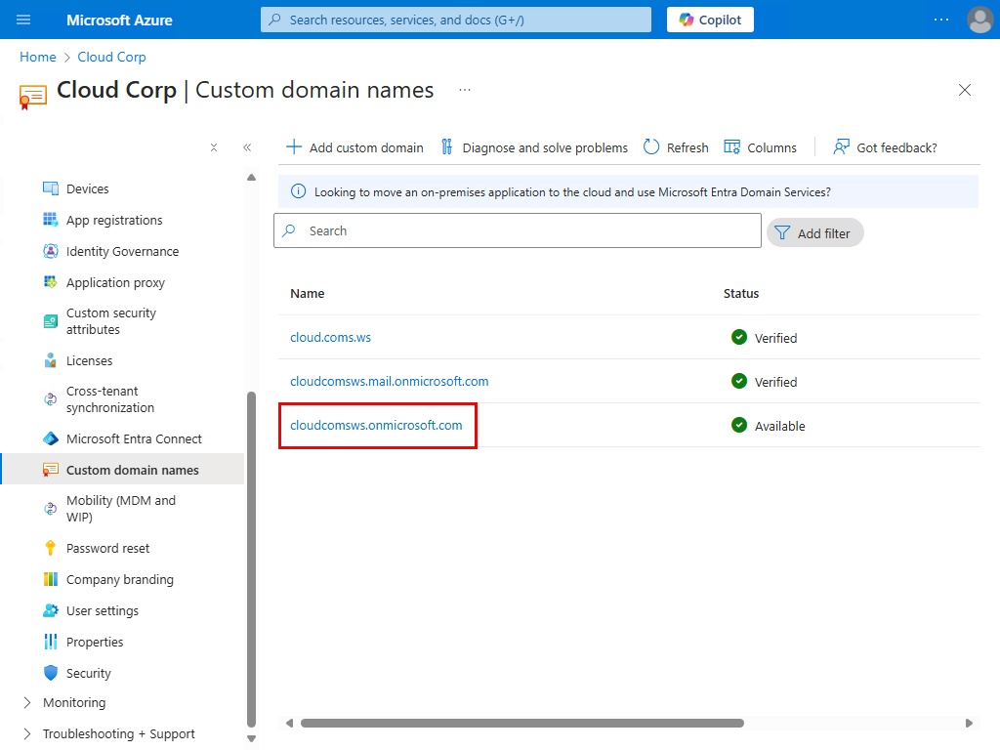
2. Then use in a GPO Configure client-side registry setting for SCP
Link GPO to a device OU

3. On Security Filtering,
- Remove Authenticated Users
- Add a pilot device group

On Deletation tab, add Authenticated Users Read

3. Configure Entra Connect scopes to sync device objects to Entra ID
Rerun Entra Connect
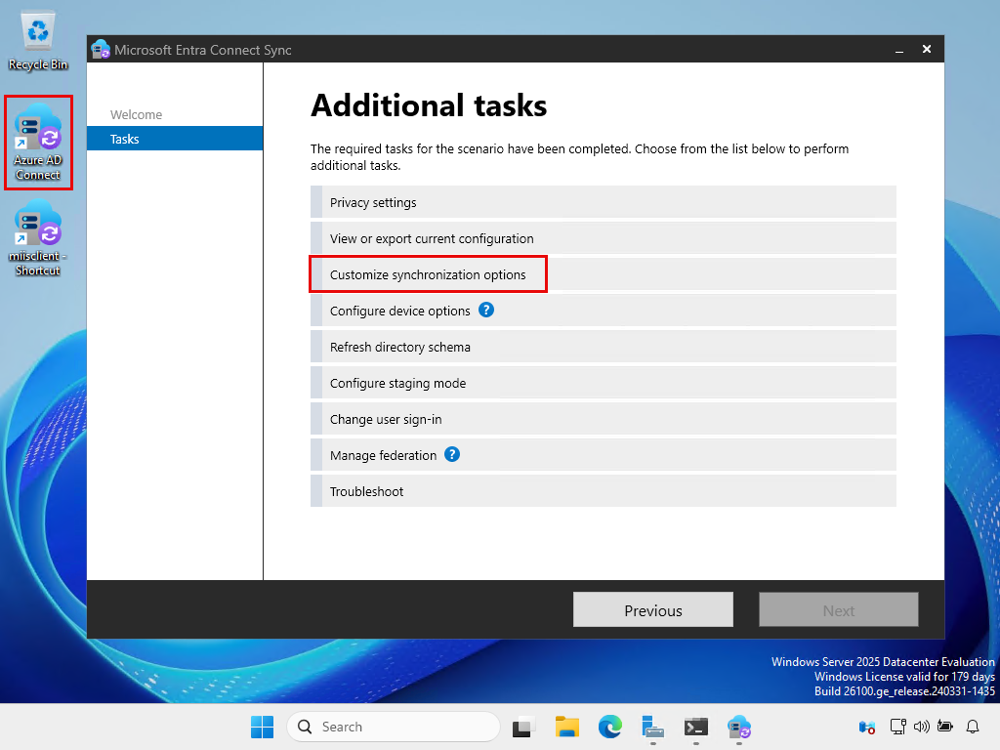
Select device OUt to sync to Entra ID

All settings have been done.
Now we can start piloting a device to do Hybrid Join (targeted).
4. Test a pilot client
4.1 Move a pilot device to a synced OU, add to the pilot device group, and restart the client
1. Move a pilot client to a synced device OU.
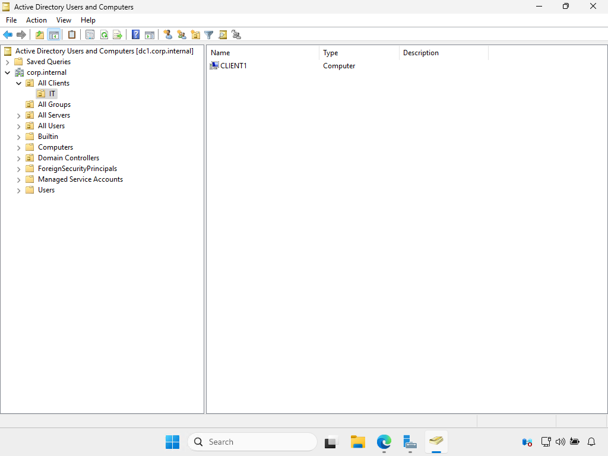
2. Add the pilot client to pilot device group.
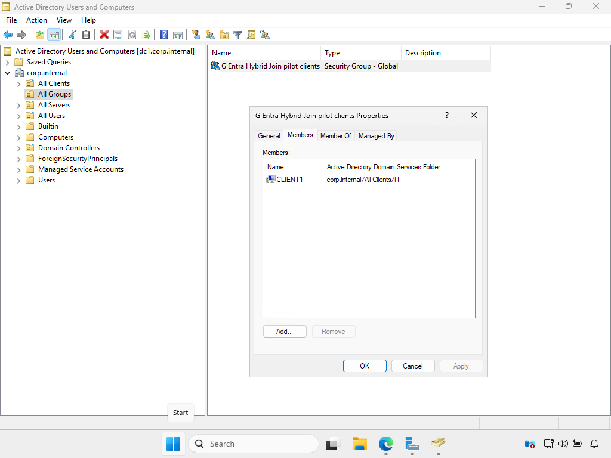
3. Restart the client to get the pilot device group SID.
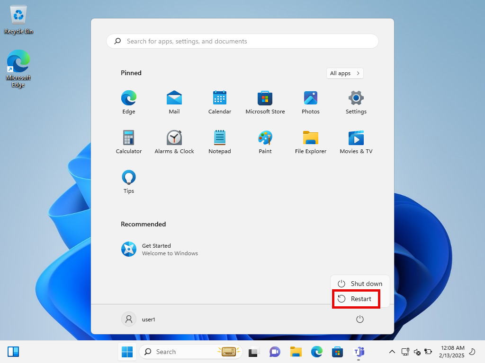
4.2 Nothing to do, just wait until success
After retarted, just wait. No need to sign in.
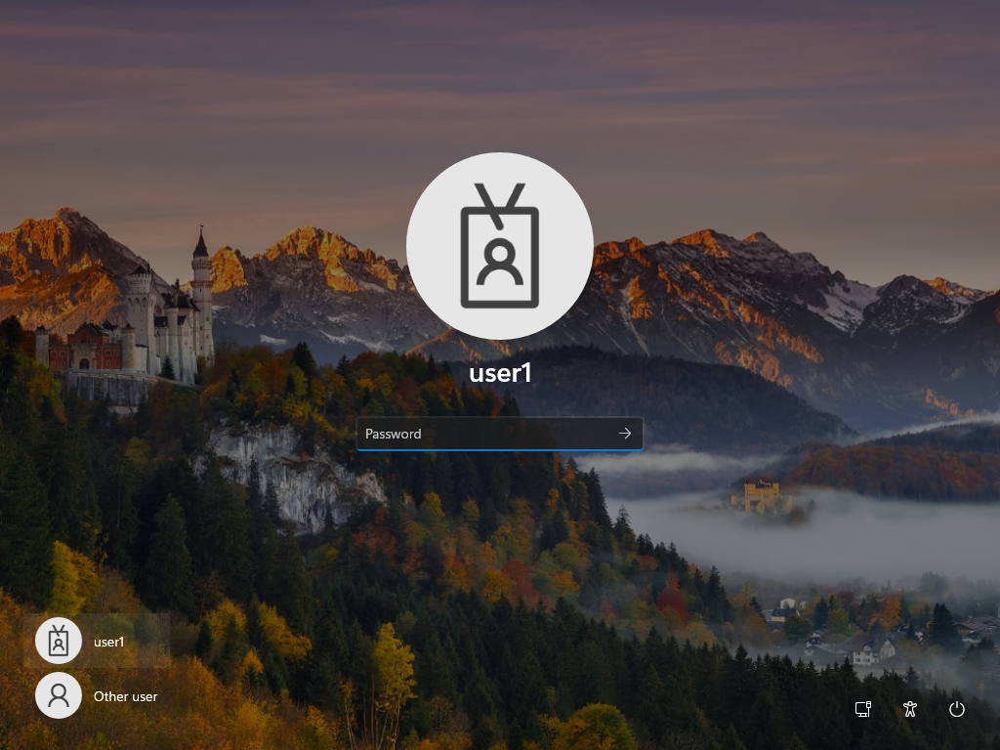
Automatic-Device-Join task on the device will run every 1 hour (or when the user signed in to the device)
The task will find the tenant info via registry (deployed via GPO)
Then generate a self-signed certificate and paste to its computer object in AD DS

Then Entra Connect will sync computer object to Entra ID.
However, the state is still pending.
We just wait.

Until Automatic-Device-Join task has been run again.
The device will be authented with Entra ID again and complete the Entra Hbrid joined.

4.3 Test SSO
Once the device is hybrid joined, test to sign in the device with the user that was synced to Entra Id.

Now we got the Primary Refresh Token (PRT) (look at SSO State).
dsregcmd /status

Then app on the devices will use PRT to do SSO to access app or services that use Entra ID as the identity provider.

5. (Optional) Speed up the process
Sometime we don't need to wait the hybrid join process to be completed by itself.
But we need to speed up the process.
In this case, from Microsoft Entra hybrid joined in Managed environments, we are going to speed up the process by ourself.
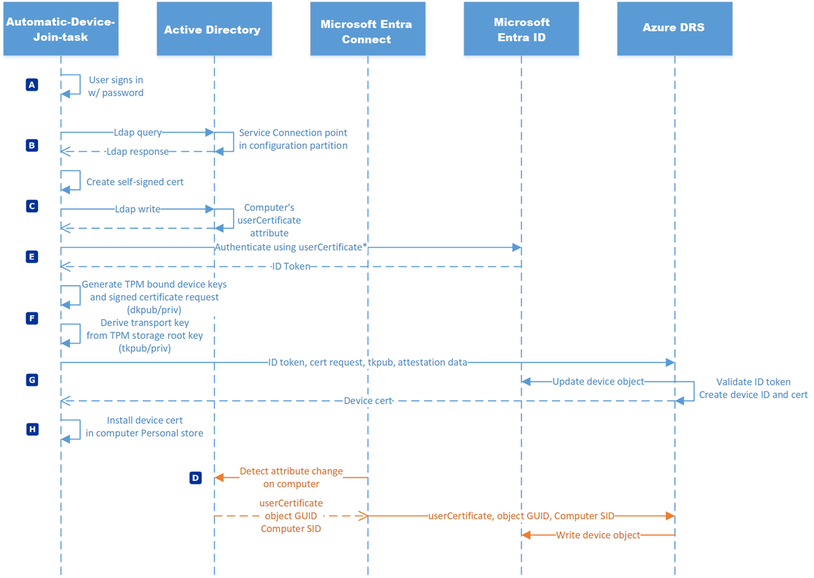
1. Sign in to the device will trigger the Automatic-Device-Join task to run.
The task will generate self-signed certificate and paste into its computer account in AD DS
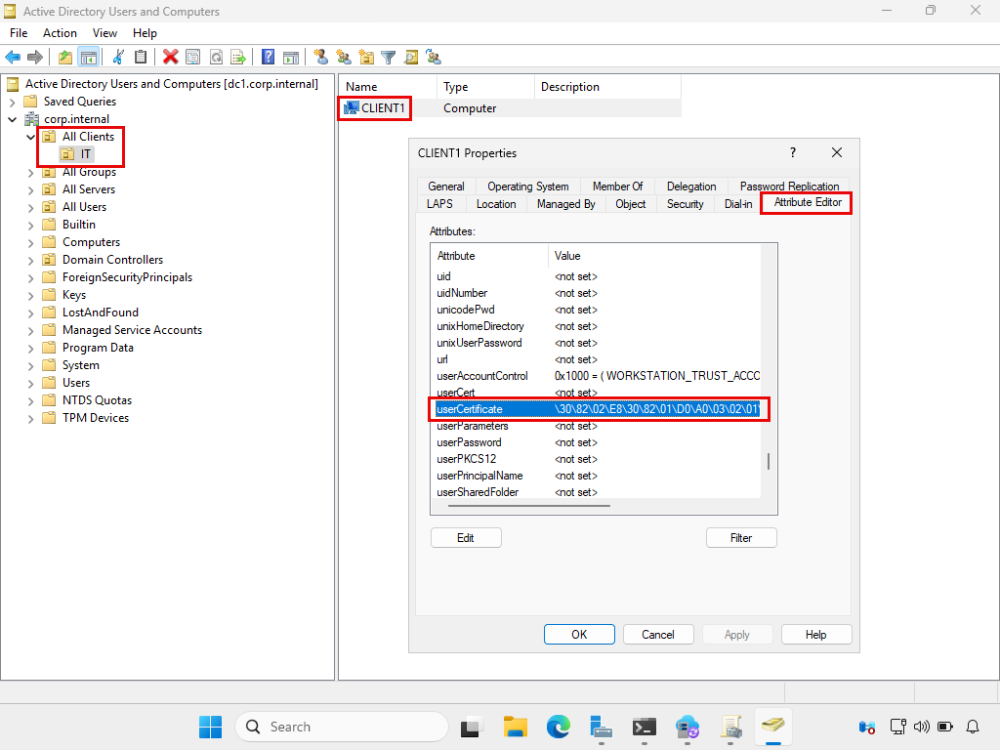
2. Force Entra Connect sync
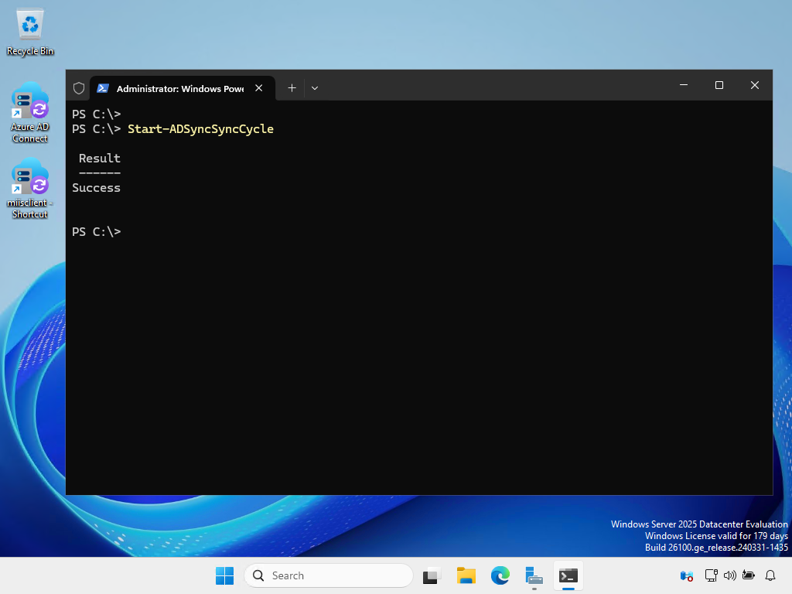
Then the computer object will be synced to Entra ID in "Pending" state.
3. Finally, manual run Automatic-Device-Join task
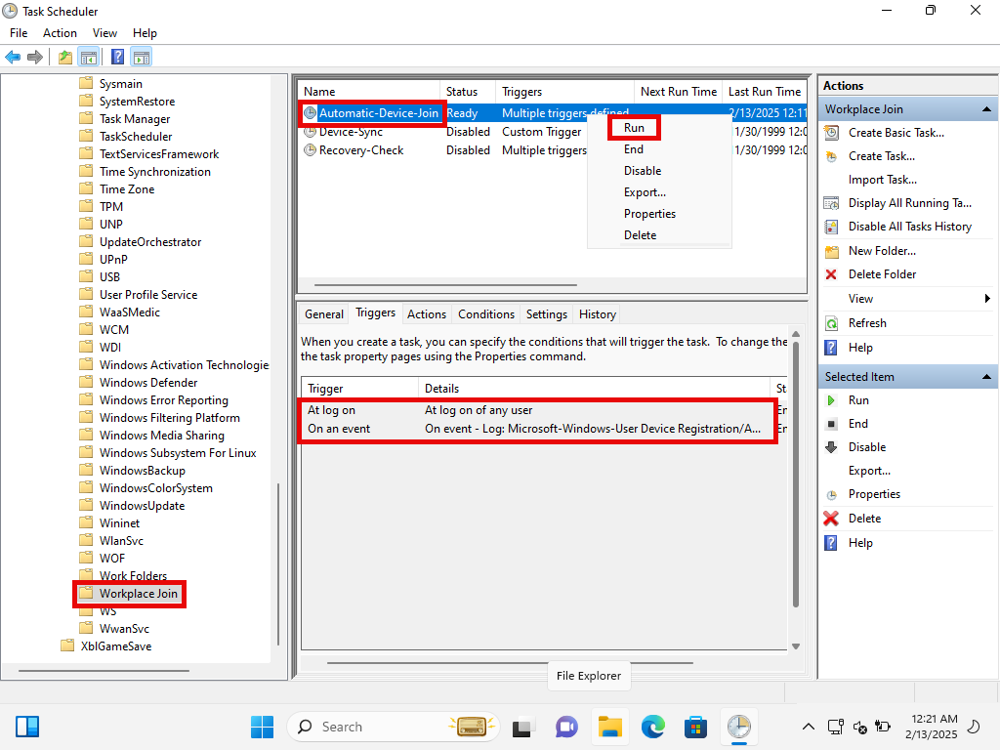
The device will complete the process without wating.
Next steps
We are going to add more devices to do hybrid join targeted deployment.
Once we are condifent, we may enable hybrid join for the whold organization by re-run Entra conect to create SCP object in AD DS for all computers from Configure Microsoft Entra hybrid join

In that case, here is a sample of SCP object in on-premises AD DS.
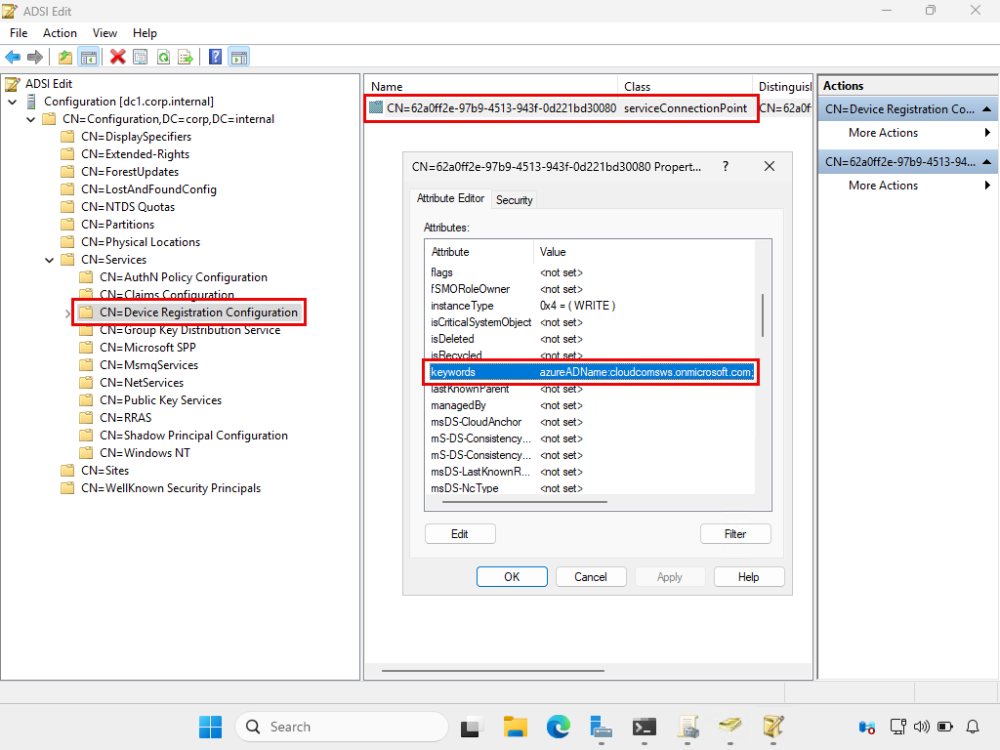